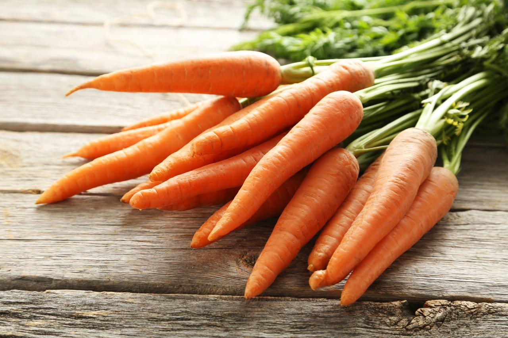
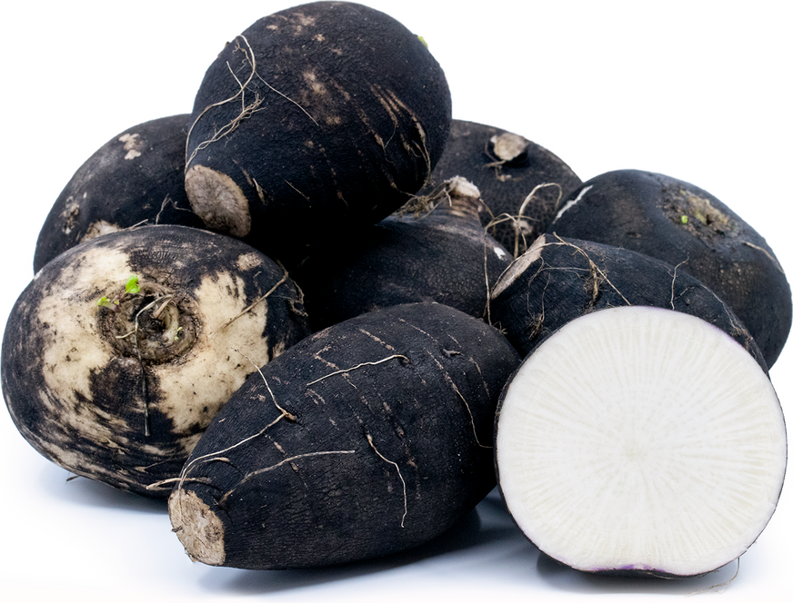

Celery

A celery is a delicious, watery Vegetable. It is usually enjoyed as a snack or with some spicy chicken wings.
Carrot

A carrot pairs well with ranch and it serves as a great compliment to salads. They are also really phenomenal snacks for kids.
Dark Radish

A Dark radish is one of the most exotic vegtables in the world.